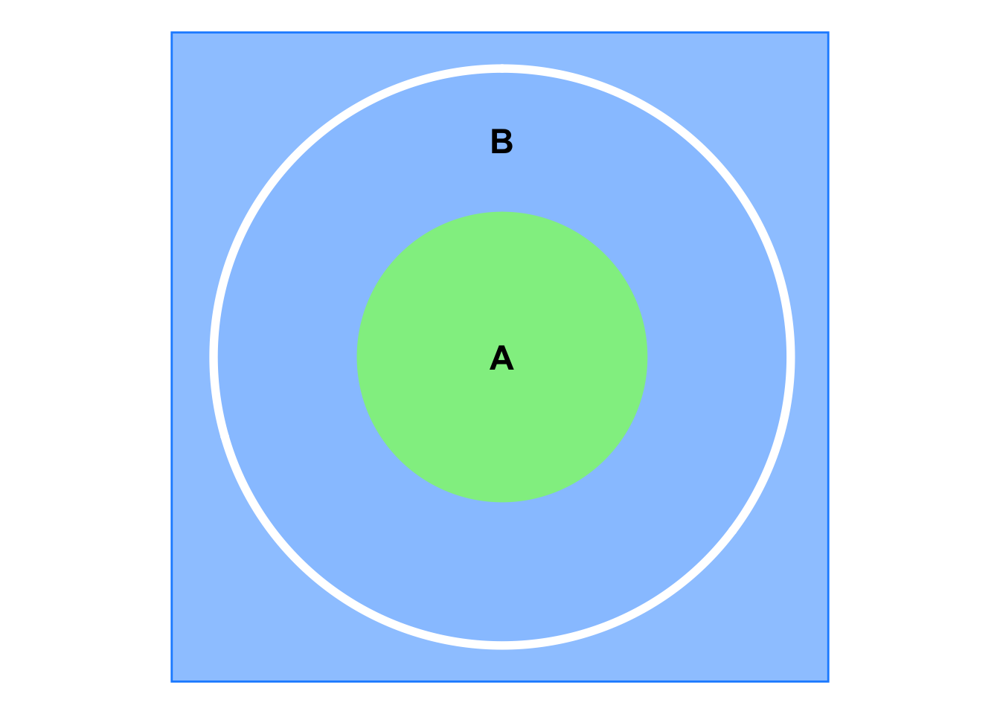
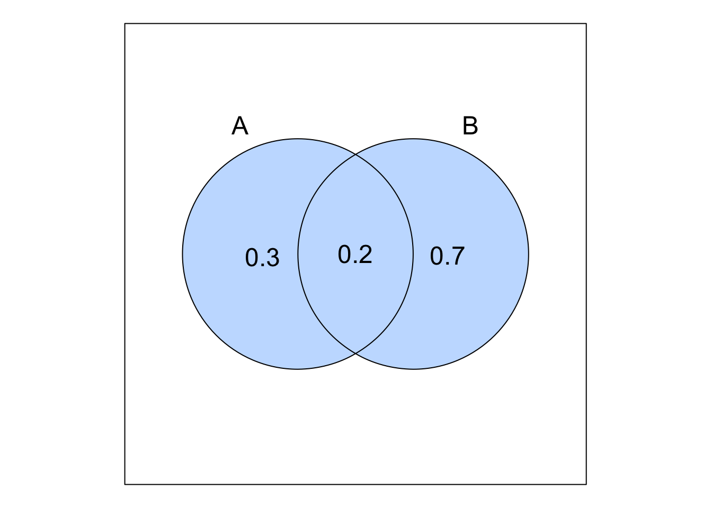
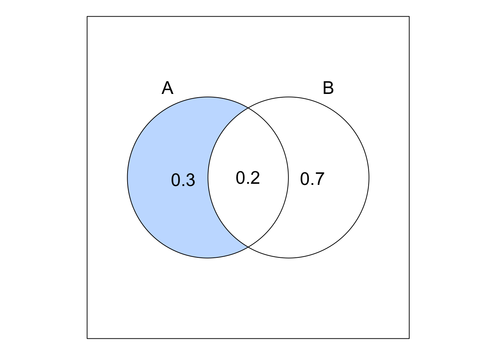
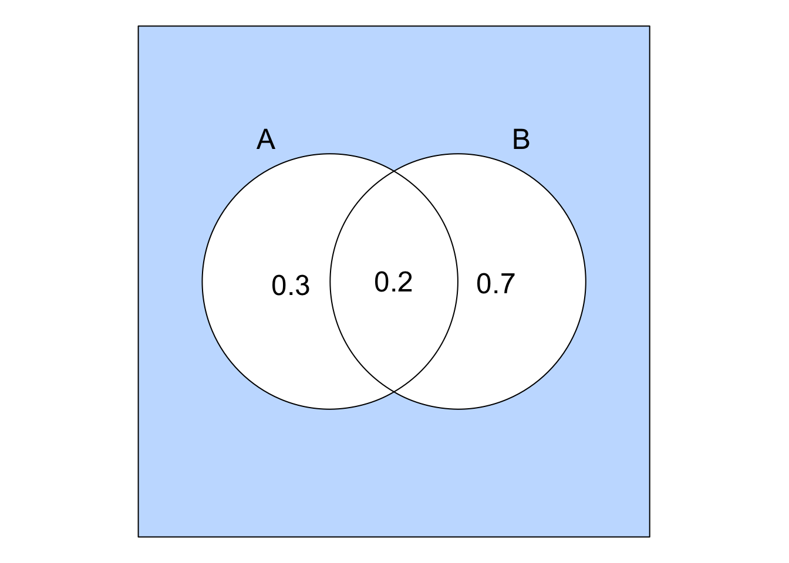

Probability Definition - Axioms
1 Methods of assigning probability
Probability ranges between \(0\) and \(1\) and describes how likely an event is to occur.
Probability can be assigned to events by different ways:
Subjective probability: This measures how an individual feels or is confident that an event will occur.
This is based on personal judgment and experience, not on repeated trials.
It is simple but less reliable.
For example, a person may feel that the probability of rain today is \(30\%\).
Relative frequency approach: This is an objective way that depends on repeating an experiment many times and counting the number of times an event occurs.
The probability of an event \(A = \displaystyle \frac{m}{n}\), where \(m\) is the number of times event \(A\) occurs and \(n\) is the total number of trials.
As the number of the trials \(n\) increases and tends to infinity, keeping the experimental conditions constant, the probability of the event \(A\) converges to a limiting value interpreted as the probability of event \(A\):
\[ \text{Probability of}\ A = \lim_{n \to \infty} \frac{m}{n} \]
In this context, the relative frequency approach is an approximation or an estimate of the probability of the event.
This approach is referred to as a posteriori concept of probability because it is based on empirical data or experimentation (i.e., calculated after the experiment is conducted.)
For example, if we toss a fair coin \(1000\) times and get \(480\) heads, then the probability of getting a head is \(\large \frac{480}{1000} = 0.48\). When the number of trials increases and \(n\) tends to infinity, the probability of getting a head will converge to \(0.5\).
Note- A fair coin means that the probability of getting a head is equal to the probability of getting a tail \(= 0.5\).
Classical approach: This is based on abstract reasoning and is used when all outcomes are equally likely.
If an experiment has mutually exclusive and equally likely \(N\) outcomes or simple events, then the probability of an event \(A\) is given by:
\[ \text{Probability of}\ A = \frac{N(A)}{N(S)} =\frac{\text{Number of elements in}\ A}{\text{Total number elements in the sample space}} \]
This approach is referred to as a priori concept of probability because it is based on theoretical reasoning and not on empirical data or experimentation (i.e., there is no need to conduct an experiment to determine the probability of an event).
For example, refer to Example C.1.1 in the previous section about rolling a single die:
All the six numbers are equally likely to occur, and the probability of getting any number is \(\displaystyle \frac{1}{6}\).
The probability of getting an even number is equal to the number of elements in the event \(B = \{2, 4, 6\}\) divided by the total number of elements in the sample space \(S = \{1, 2, 3, 4, 5, 6\}\):
\[ \text{Probability of}\ B = \frac{N(B)}{N(S)} = \frac{3}{6} = 0.5 \]
- The probability of getting a number divisible by \(3\) is equal to the number of elements in the event \(D = \{3, 6\}\) divided by the total number of elements in the sample space:
\[ \text{Probability of}\ D = \frac{N(D)}{N(S)} = \frac{2}{6} = \frac{1}{3} \]
The probability of \(B \cap D = \{6\}\) is equal to \(\displaystyle \frac{1}{6}\).
As you notice, we do not need to roll the die to determine the probability of these events, rather we can determine them theoretically.
2 Formal definition and axioms of probability
2.1 Definition
The probability is a set function \(P\) that assigns a number to each event in the sample space.
The probability of an event \(A\) is denoted by \(P(A)\).
2.2 Axioms
Axioms refer to the basic or elementary rules of probability from which all other rules can be derived.
Axiom 1: - For an experiment with mutually exclusive outcomes, the probability of an event \(A\) is a non-negative number (i.e., the probability is greater than or equal to \(0\) and less than or equal to \(1\)):
\[ 0 \le P(A) \le 1 \]
Axiom 2: - The sum of probabilities of all the mutually exclusive outcomes of an experiment is equal to \(1\), i.e., the probability of the sample space \(S\) is equal to \(1\):
\[ P(A_1) + P(A_2) + P(A_3) + \ldots + P(A_n) = P(S) = 1 \]
Axiom 3: - For any two mutually exclusive events \(A_1\) and \(A_2\), the probability of the union of these events is equal to the sum of the probabilities of the individual events:
\[ P(A_1 \cup A_2) = P(A_1) + P(A_2) \]
NoteWhen the events are not mutually exclusive (i.e., they can occur simultaneously), then the probability of their union will be \(P(A \cup B) = P(A) + P(B) - P(A \cap B)\), this is discussed in detail below.
The third axiom can be extended to more than two events: \(P(A_1 \cup A_2 \cup A_3 \cup \ldots \cup A_n) = P(A_1) + P(A_2) + P(A_3) + \ldots + P(A_n)\)
2.3 Other probability rules
Proof
- \(P(A \cup A') = P(A) + P(A') = P(S) = 1\), then \(P(A) = 1 - P(A')\).
Proof
- \(P(\emptyset) = P(S') = 1 - P(S) = 1 - 1 = 0\).
Proof
As shown in the Venn diagram below, \(B\) is the bigger circle, \(A\) is the smaller green circle, and \(A'\) is the blue area, therefore, \(B = A \cup (B \cap A')\).
Then, \(P(B) = P(A) + P(B \cap A') \ge P(A)\).
\[ P(A \cup B) = P(A) + P(B) - P(A \cap B) \]
Explanation
- Because the union of \(A\) and \(B\) contains the elements in \(A\) or \(B\) or both, we count the elements in \(A\) and \(B\) and subtract the elements in both groups (i.e., \(A \cap B\)) to avoid double counting.
A pharmaceutical company is conducting clinical trials for two new drugs. The company’s research director believes that the probability of the first drug receiving regulatory approval is \(0.3\), the probability of the second drug receiving regulatory approval is \(0.7\), and the probability of both drugs receiving regulatory approval is \(0.2\).
Answer
- Let \(A\) be the event that the first drug is approved and \(B\) be the event that the second drug is approved:
\[ P(A) = 0.3, \quad P(B) = 0.7, \quad P(A \cap B) = 0.2 \]
\[ P(A \cup B) = P(A) + P(B) - P(A \cap B) = 0.3 + 0.7 - 0.2 = 0.8 \]

\[ P(A \setminus B) = P(A \cap B') = P(A) - P(A \cap B) = 0.3 - 0.2 = 0.1 \]

\[ P[(A \cup B)'] = 1 - P(A \cup B) = 1 - 0.8 = 0.2 \]

\[ P[(A \setminus B) \cup (B \setminus A)] = [P(A) - P(A \cap B)] + [P(B) - P(A \cap B)] = \]
\[ P(A) + P(B) - 2P(A \cap B) = P(A \cup B) - P(A \cap B) = 0.8 - 0.2 = 0.6 \]
- In a survey of a population, the proportion of people who use smartphones is \(0.65\), the proportion of people who use laptops is \(0.50\), and the proportion of people who use both is \(0.30\). What proportion of the population uses neither smartphones nor laptops?
The answer is
3 References
Heumann, C., Schomaker, M., and Shalabh (2022). Introduction to Statistics and Data Analysis: With Exercises, Solutions and Applications in R. Springer
Daniel, W. W. and Cross, C. L. (2013). Biostatistics: A Foundation for Analysis in the Health Sciences, Tenth edition. Wiley
Penn State University. STAT 414: Introduction to Probability Theory. Online Statistics Education. Retrieved December 02, 2024, from https://online.stat.psu.edu/stat414